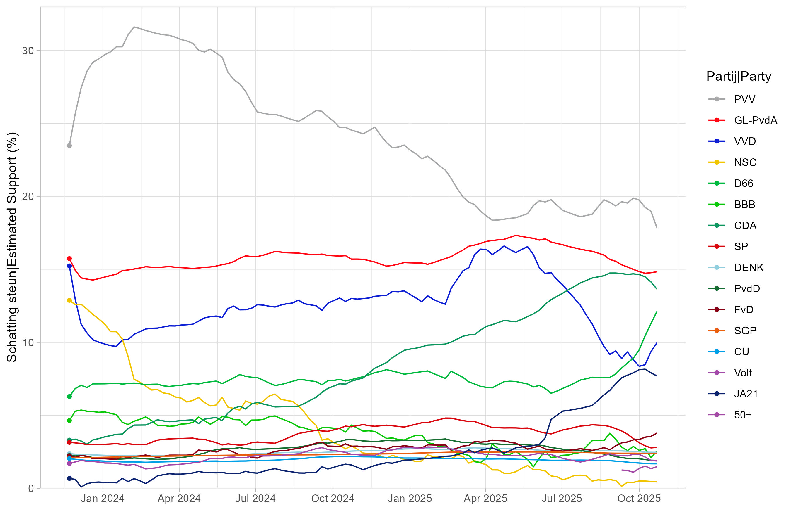
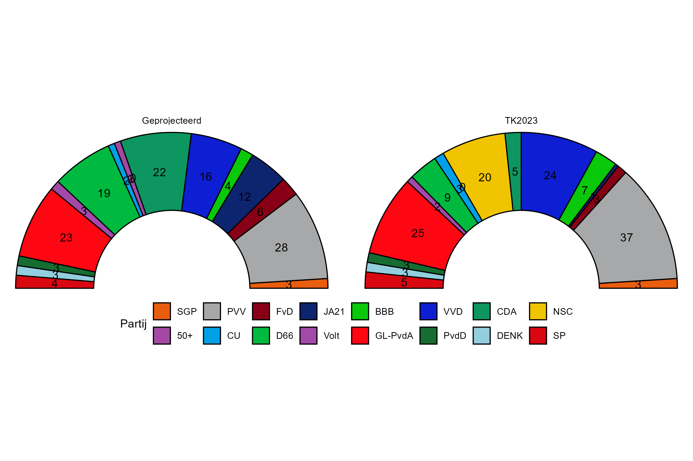

Netherlands
Last Updated: 30 August 2025
Party Support since Last Election

Composition of the Tweede Kamer

Support by Bloc

Government Formation
Below are the coalitions with the highest probability of being feasible-see the Methodology page for more details
Interactive Map
Source for gemeente boundaries: cbsodataR package